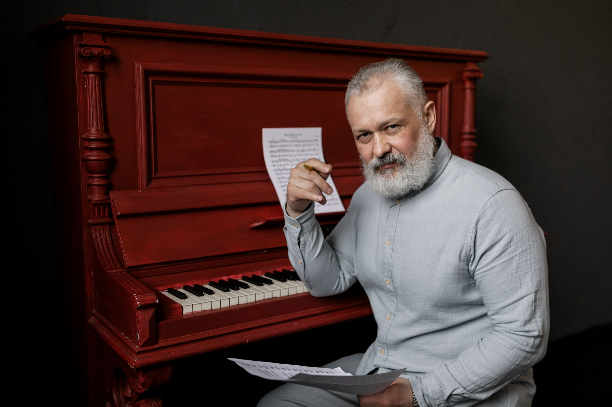
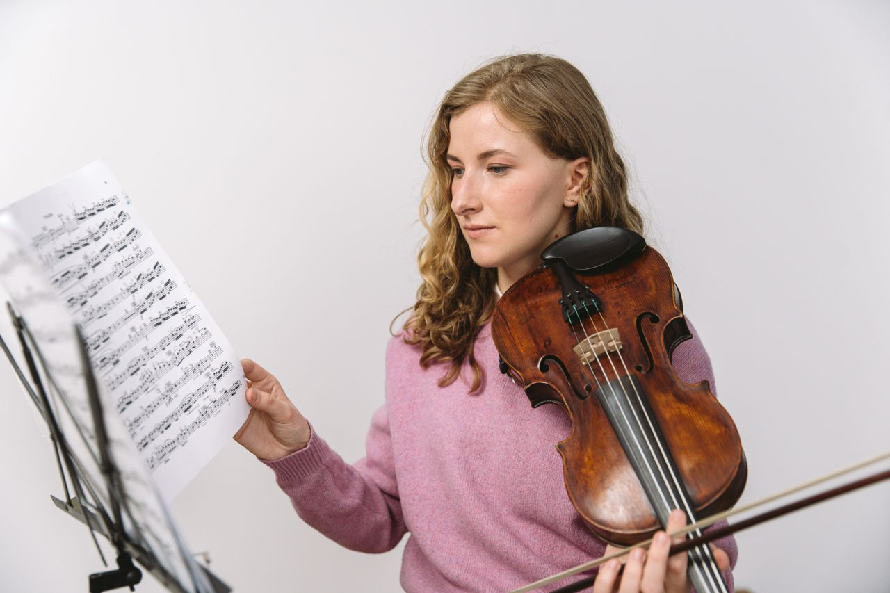

Our Instructors
Riverbend Music Academy was created to provide professional private music instruction in an environment where students feel comfortable learning. The academy serves students with different musical goals and levels of experience. Some students may be preparing for performances or auditions, while others simply want to learn an instrument for personal enjoyment.

Daniel Mercer
Academy Director
Daniel is the founder and director of Riverbend. He has taught private piano for more than fifteen years, from young beginners to advanced adults. His lessons combine technique, music reading, rhythm, repertoire, and interpretation, and he also coaches students preparing for performances and auditions.
Teaching Philosophy
Strong fundamentals should give students greater freedom to enjoy music.
Daniel believes students make lasting progress when they understand both how to perform music and why particular techniques matter.

Elena Park
Piano and Violin Instructor
Elena has experience teaching children, teenagers, and adults. Her lessons emphasize technical development, careful listening, music reading, and gradual improvement. She especially enjoys helping students who are picking up an instrument for the first time.
Teaching Philosophy
Students make the greatest progress when expectations are clear and improvement is recognized.
Elena believes encouragement and structure should work together, so students know what to practice and can see the progress they've made.
Claire Donovan
Voice Instructor
Claire teaches healthy vocal technique, musical interpretation, and performance confidence. She helps singers of all levels understand how breathing, posture, tone, and expression work together.
Teaching Philosophy
Every singer should understand how to use their voice safely and expressively.
Claire emphasizes healthy technique and age-appropriate repertoire.